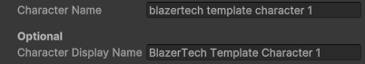

Layered Character Templates
A Layered Character Template is a Scriptable Object used to create Layered Characters at runtime.
It acts as a reusable blueprint that defines:
- The Character Type the character will use
- The default name assigned when created
- The Layer Options selected for each character layer
Layered templates are designed for characters that support modular customization.
When Should You Use This?
Use a Layered Character Template when:
- Your character uses multiple visual layers
- You want customizable or editable characters
- You plan to support runtime editing or randomization
Layered Templates work seamlessly with the Character Creator system.
Creating a Layered Character Template
- Right click in the Project Window
- Navigate to: Create > BlazerTech > Character Management System > Character Templates > Layered Character Template

Configuration
Once created, configure the following fields.
1. Character Type
Assign the Character Type that all characters created from this template will use.

This determines:
- The available layers
- The available Layer Options per layer
- The Animator Controller used for animation
Once assigned, the template will automatically display the layer list.
2. Default Name
Set the default name assigned when a character is created from this template.
You may optionally assign a Display Name for use in UI or gameplay systems.

3. Selecting Layer Options
When a Character Type is assigned, a list of layers appears.

Each entry represents a layer defined in the Character Type.
For each layer:
- A dropdown lists all available Layer Options
- Select the option that should be used by default
When a character is created from this template, all selected layer options are applied automatically.
This allows you to:
- Create predefined character presets
- Quickly define NPC variations
- Establish a default player appearance
Runtime Usage
To use a Layered Character Template, assign it to a:
Layered Character Renderer component.

At runtime the component will:
- Create a character instance from the template
- Apply the selected Layer Options
- Use the Character Type’s Animator Controller to animate the character
Read More → Layered Character Renderer Component
Workflow Summary
- Create a Layered Character Template
- Assign a Character Type
- Set the default name
- Choose Layer Options for each layer
- Attach the template to a Layered Character Renderer
The template can now be reused to consistently generate that layered character configuration.